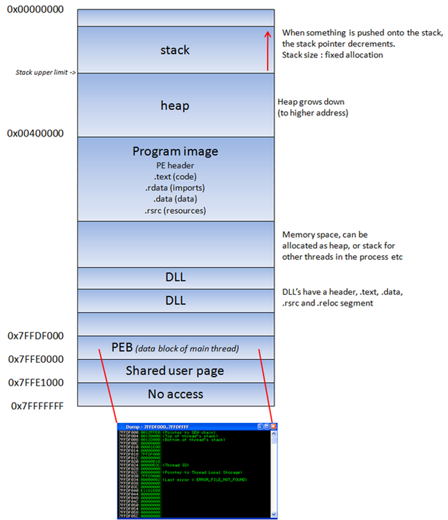

When an application is stared in a Win32 environment, a process is created and virtual memory is assigned to. In a 32 bit process, the address ranges from 0x00000000 to 0xFFFFFFFF, where 0x00000000 to 0x7FFFFFFF is assigned to "user-land", and 0x80000000 to 0xFFFFFFFF is assigned to "kernel land". Windows uses the flat memory model, which means that the CPU can directly/sequentially/linearly address all of the available memory locations, without having to use a segmentation/paging scheme.
Kernel land memory is only accessible by the OS.
When a process is created, a PEB (Process Execution Block) and TEB (Thread Environment Block) are created.
The PEB contains all user land parameters that are associated with the current process :
- location of the main executable
- pointer to loader data (can be used to list all dll’s / modules that are/can be loaded into the process)
- pointer to information about the heap
The TEB describes the state of a thread, and includes
- location of the PEB in memory
- location of the stack for the thread it belongs to
- pointer to the first entry in the SEH chain (see tutorial 3 and 3b to learn more about what a SEH chain is)
Each thread inside the process has one TEB.
The Win32 process memory map looks like this :

The text segment of a program image / dll is readonly, as it only contains the application code. This prevents people from modifying the application code. This memory segment has a fixed size. The data segment is used to store global and static program variables. The data segment is used for initialized global variables, strings, and other constants.
The data segment is writable and has a fixed size. The heap segment is used for the rest of the program variables. It can grow larger or smaller as desired. All of the memory in the heap is managed by allocator (and deallocator) algorithms. A memory region is reserved by these algo’s. The heap will grow towards a higher addresses.
In a dll, the code, imports (list of functions used by the dll, from another dll or application), and exports (functions it makes available to other dll’s applications) are part of the .text segment.